Bắt đầu từ đâu?
Nếu cần tạo hợp đồng mới, hãy làm theo thứ tự dưới đây. Mỗi bước dùng thông tin đã có ở bước trước.
- Gói dịch vụ: kiểm tra giá, loại tiền, thuế và mức giảm giá.
- Khách hàng: tìm khách hàng đã có trước. Chỉ tạo mới nếu chưa có hồ sơ phù hợp.
- Hợp đồng: chọn khách hàng và gói dịch vụ; kiểm tra số tiền và ngày bắt đầu trước khi lưu.
- Hóa đơn: sau khi có hợp đồng, kiểm tra khoản cần thu và ngày đến hạn.
- Thanh toán: chọn hóa đơn cần trả hoặc nạp tiền vào ví khách hàng. Tạo khoản thanh toán chưa có nghĩa là đã nhận được tiền.
Ảnh hướng dẫn
Ảnh được chụp khi kiểm tra trên môi trường thử nghiệm. Ảnh chỉ cho thấy màn hình tại thời điểm đó; không có nghĩa là mọi dữ liệu đã được lưu thành công hoặc đã được kế toán/pháp lý duyệt.
Bấm vào ảnh để mở ảnh kích thước đầy đủ trong thẻ mới. Ảnh nằm trong thư mục images/ cạnh file HTML. Khi gửi cho người khác, gửi cả thư mục html-guide hoặc nén thành ZIP; nếu chỉ gửi file HTML, ảnh sẽ không đi kèm.
Tổng quan
Trang này tóm tắt tình hình chung để bạn biết mục nào cần kiểm tra thêm.
- Chọn khoảng thời gian và loại tiền nếu trang có các lựa chọn này.
- Nếu thấy một con số bất thường, mở mục Hóa đơn hoặc Thanh toán để kiểm tra từng hồ sơ. Con số tổng trên trang này chỉ để xem nhanh.
Đã mở xem ngày 13/10/2026; không tạo hay thay đổi dữ liệu.
Người dùng
Dùng mục này để cấp hoặc thay đổi quyền đăng nhập của nhân viên.
- Trước khi thêm người hoặc đổi quyền, kiểm tra đúng email và xác nhận người đó đã được quản lý cho phép.
- Sau khi lưu, nhờ người dùng đăng xuất rồi đăng nhập lại và kiểm tra họ chỉ thấy những mục phù hợp với công việc.
Hóa đơn
Dùng mục này để xem khách hàng còn cần trả tiền hay không.
- Tìm theo tên khách hàng hoặc hợp đồng. Mở hóa đơn và kiểm tra tên khách, kỳ dịch vụ, số tiền, loại tiền và trạng thái: Chưa thanh toán, Quá hạn hoặc Đã thanh toán.
- Nếu cần thu tiền, chọn hóa đơn chưa thanh toán rồi làm tiếp ở mục Thanh toán. Hãy kiểm tra các hóa đơn đều dùng cùng loại tiền.
- Hóa đơn bổ sung dùng để thu một khoản riêng, ngoài phí hợp đồng thông thường. Chỉ tạo khi có yêu cầu và căn cứ rõ ràng; không dùng nó để sửa hóa đơn hợp đồng sai.
- Hóa đơn trong OneCM là hồ sơ theo dõi khoản cần thu. Trước khi phát hành hóa đơn thuế điện tử hoặc dùng kết nối Viettel, hãy làm theo quy trình kế toán đã được duyệt.
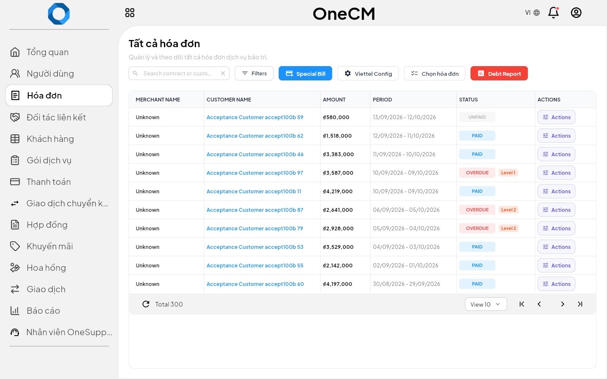
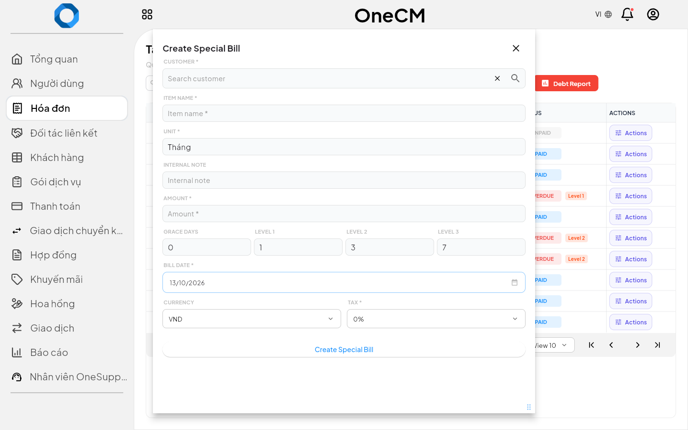
Đối tác liên kết
Dùng mục này để xem và mời các đơn vị/cá nhân giới thiệu khách hàng cho công ty.
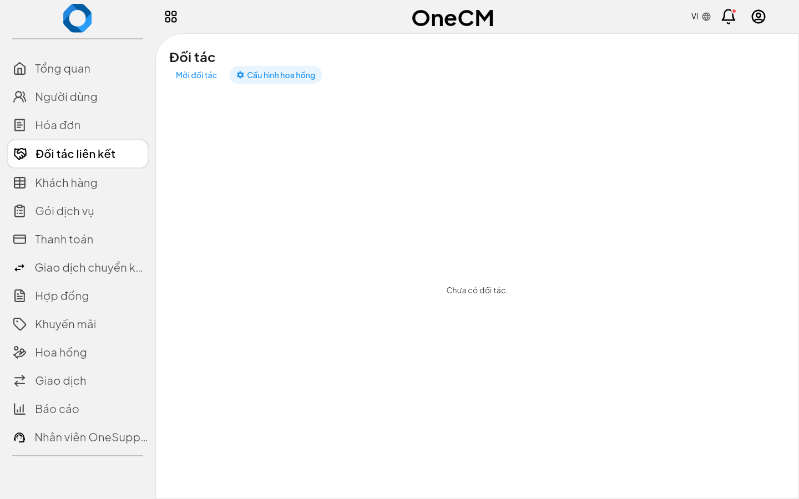
- Trước khi gửi lời mời, xác nhận đúng tên và thông tin liên hệ của đối tác.
- Kiểm tra mức hoa hồng đã được duyệt trước khi áp dụng cho hợp đồng. Nếu cần thay đổi mức này, hỏi người quản lý phụ trách.
- Sau khi có hợp đồng hoặc thanh toán liên quan, xem mục Hoa hồng để đối chiếu khoản ghi nhận.
Mời đối tác vào hệ thống
Lời mời tạo một liên kết để đối tác tự đăng ký và nhận mã giới thiệu của mình. Đây là quan hệ giới thiệu ở cấp hệ thống, không phải thao tác chuyển công ty hay chi nhánh.
- Mở Mời đối tác. Nhập hoặc kiểm tra thông tin người nhận và chọn cấu hình hoa hồng ban đầu cho đối tác này.
- Thời hạn: số ngày liên kết còn dùng được, mặc định 7 ngày, chỉ nhận giá trị từ 1 đến 365. Số lượt dùng tối đa: để trống nghĩa là không giới hạn; nếu nhập thì phải lớn hơn 0.
- Chọn các quyền đi kèm cho đối tác nếu chương trình yêu cầu. Không chọn quyền cao hơn mức cần thiết.
- Bấm tạo liên kết, sau đó bấm Copy Link và gửi riêng cho đúng người nhận.
- Sau khi đối tác nhận lời mời, quay lại danh sách để kiểm tra số lượt đã dùng, trạng thái và ngày hết hạn. Liên kết đã tắt, hết hạn hoặc hết lượt sẽ bị từ chối khi mở.
- Nút Settings trên từng dòng dùng để bật/tắt liên kết, đổi số lượt tối đa hoặc tạo lại token. Tạo lại token làm liên kết cũ ngừng hiệu lực; hãy thông báo cho người nhận.
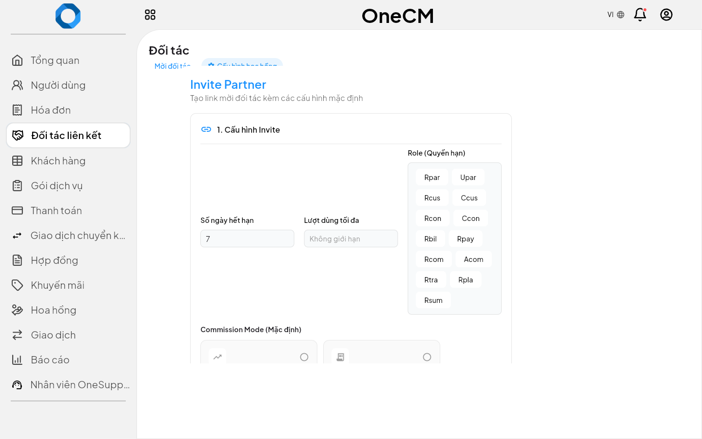
Cấu hình hoa hồng (Commission modes)
Công ty đặt cấu hình mặc định trước; mỗi Partner chọn một mode đang dùng và giữ cấu hình riêng cho mode đó. Cấu hình mặc định không tự ghi đè Partner đã có cấu hình riêng.
| Mode | Bạn nhập gì? | Cách hệ thống tính |
|---|---|---|
| 0 — Doanh số | Các ngưỡng doanh số, mỗi ngưỡng một mức hoa hồng. | Chọn ngưỡng cao nhất mà doanh số của nhóm đạt được, rồi áp một mức đó cho toàn bộ doanh số của nhóm. |
| 1 — Số lượng Bill | Các ngưỡng theo số Bill đã trả, mỗi ngưỡng một mức. | Giống mode 0 nhưng ngưỡng đếm theo số Bill; vẫn áp một mức cho toàn bộ doanh số. |
| 2 — Membership | Tên hạng và mức hoa hồng cho từng hạng. | Chọn một hạng theo thông tin Membership của đối tác rồi áp mức của hạng đó. |
| 3 — Default (mặc định) | Một mức duy nhất. | Áp mức đó cho toàn bộ doanh số của nhóm. |
| 4 — Per-Contract (theo hợp đồng) | Đặt riêng cho từng hợp đồng; không có bảng ngưỡng chung. | Tính theo tỷ lệ đã lưu trên hợp đồng/Bill tương ứng. |
| 5 — Hợp đồng tháng | Các ngưỡng theo số tháng, mỗi ngưỡng một mức. | Áp mức tương ứng cho từng Bill, rồi cộng lại. |
Mỗi dòng cấu hình có ô Value và một công tắc %/$. Công tắc bật (%) nghĩa là phần trăm; tắt ($) nghĩa là số tiền cố định, không phải đơn vị USD. Hãy hỏi người phụ trách trước khi đổi mức đã được duyệt.
- Vào Cấu hình hoa hồng để xem/đặt cấu hình mặc định của công ty. Cần quyền cập nhật đối tác.
- Mở Partner cần chỉnh. Ở phần mode, chọn mode đang áp dụng, bấm Edit, nhập các mức, bấm Done, rồi bấm Update để lưu.
- Nếu Partner chưa có dữ liệu cho mode đang chọn, biểu mẫu có nút Get commission config để sao chép cấu hình mặc định vào biểu mẫu. Nút này chỉ điền vào biểu mẫu đang mở; vẫn phải bấm Update mới lưu và không tự đồng bộ các Partner khác.
- Nếu đang đăng nhập bằng chính tài khoản Partner, trang hồ sơ chỉ cho xem cấu hình hiện hành; đối tác không tự sửa mức hoa hồng của mình.
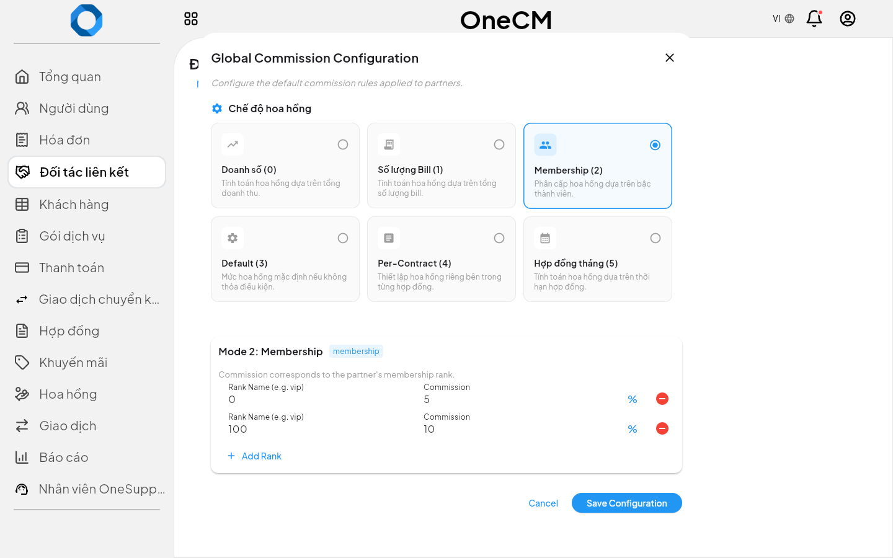
Gắn mã đối tác vào hợp đồng
- Mở biểu mẫu Tạo hợp đồng và tìm phần Chi tiết hoa hồng và đối tác.
- Ở ô Mã đối tác (Partner Code), nhập mã do đối tác hoặc người quản lý cung cấp rồi tìm. Hệ thống chỉ nhận đối tác đang ở trạng thái hoạt động.
- Chọn đối tác trong danh sách kết quả và chọn mode hoa hồng cho đối tác đó. Có thể gắn nhiều đối tác, mỗi đối tác một mode; hãy kiểm tra lại trước khi lưu hợp đồng.
- Không tự nghĩ ra mã. Không dùng ô Áp dụng mã ưu đãi (Coupon) để gắn đối tác: đó là hai ô khác nhau, dùng cho hai việc khác nhau.
- Trên biểu mẫu sửa hợp đồng hiện tại, ô Mã đối tác chỉ để xem. Nếu hợp đồng đã lưu mà chưa gắn đối tác, hãy hỏi người phụ trách thay vì tự sửa dữ liệu.
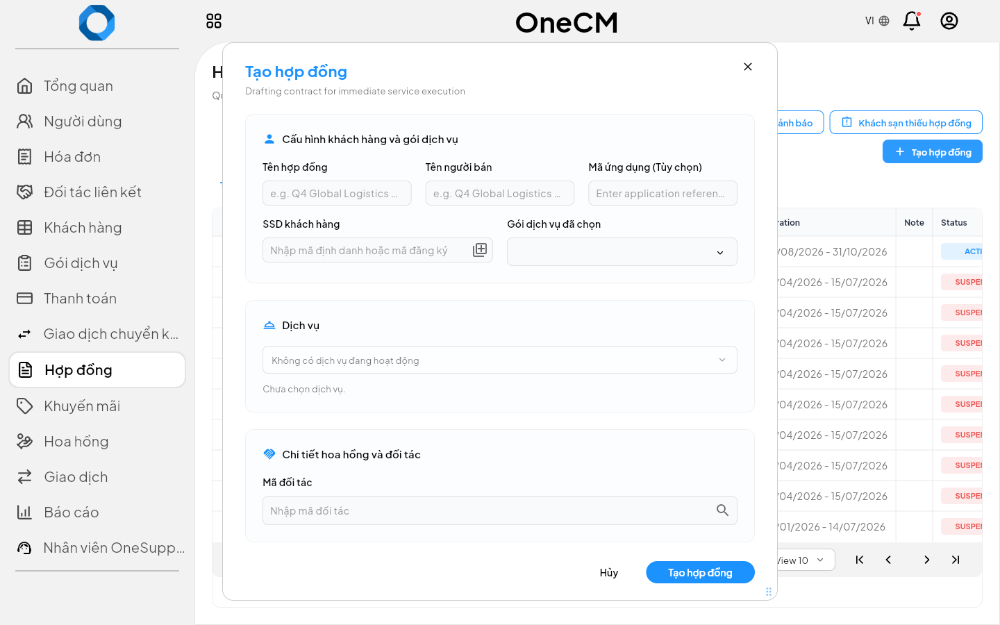
Khi nào đối tác được hưởng hoa hồng?
- Mã đối tác trên hợp đồng chỉ tạo liên kết giới thiệu. Hoa hồng chỉ phát sinh từ các Bill đã được thanh toán và đủ điều kiện; Bill dùng thử và Bill bổ sung không tham gia.
- Hệ thống kiểm tra hoa hồng định kỳ vào đầu mỗi tháng theo giờ Việt Nam, gom các Bill đủ điều kiện còn tồn (kể cả Bill của kỳ trước chưa xử lý), tính theo cấu hình hiện tại của Partner và mode đã lưu trên Bill.
- Kết quả là khoản hoa hồng đang chờ xác nhận. Mở mục Hoa hồng để đối chiếu với hợp đồng và khoản thanh toán, rồi xác nhận theo quy trình của công ty.
- Xác nhận hoa hồng sẽ ghi có vào ví đối tác trong OneCM. Đây không phải bằng chứng công ty đã chuyển tiền ra ngân hàng.
- Khi một khoản thanh toán bị hủy hoặc giao dịch trả hóa đơn bị xóa, các khoản hoa hồng gắn với Bill đó cũng được điều chỉnh. Đối chiếu lại mục Hoa hồng sau các thao tác này.
Một số thao tác chỉ hiện với người có quyền phù hợp. Khi kiểm tra ngày 13/10/2026, danh sách thử nghiệm chưa có đối tác.
Khách hàng
Trước hết hãy tìm xem khách hàng đã có trong danh sách chưa. Chỉ tạo hồ sơ mới khi chắc chắn chưa có hồ sơ phù hợp.
- Chọn loại hồ sơ: Cá nhân, Công ty hoặc Hộ kinh doanh. Chọn trạng thái đang hoạt động nếu khách có thể sử dụng dịch vụ.
- Khách hàng cá nhân: nhập họ tên và một loại giấy tờ: Căn cước công dân hoặc hộ chiếu. Điền địa chỉ, số điện thoại và email theo thông tin đã xác nhận.
- Công ty / Hộ kinh doanh: nhập tên đơn vị và mã số thuế. Điền tên, chức vụ người đại diện nếu có. Không nhập giấy tờ cá nhân vào phần thông tin của đơn vị.
- Kiểm tra lại thông tin ngân hàng và email nhận thông báo. Không tự nhập số dư ví hoặc bật tự động thanh toán; những lựa chọn này có thể ảnh hưởng đến tiền của khách hàng.
- Bấm Tạo khách hàng một lần. Chờ thông báo, rồi tìm tên hoặc số giấy tờ trong danh sách để xác nhận hồ sơ đã được tạo. Nếu chưa rõ kết quả, đừng bấm lại ngay vì có thể tạo trùng.
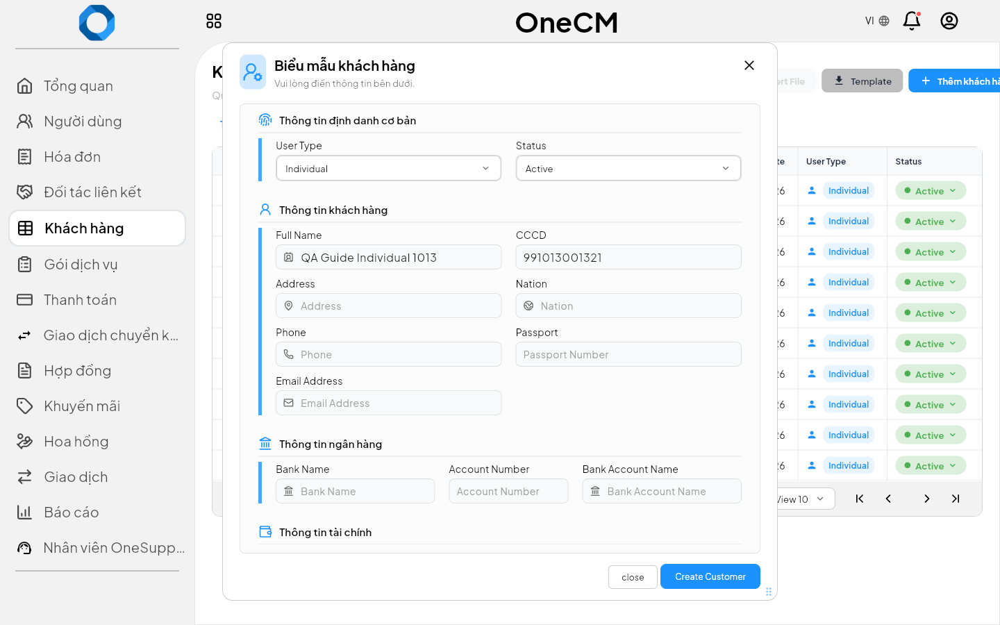
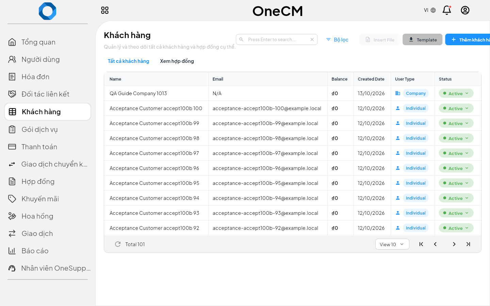
Customer.validate() nhưng đường tạo Customer hiện bỏ qua kết quả trả về; UI có kiểm tra định dạng và backend có kiểm tra trùng định danh, song không được xem mọi yêu cầu định danh trong model là đã được thực thi đầy đủ.Gói dịch vụ
Gói dịch vụ là nơi lưu giá bán, thuế, thời gian dùng thử và mức giảm giá. Khi lập hợp đồng, hệ thống dùng thông tin trong gói này để tính tiền.
- Nhập tên gói dịch vụ và tên khoản sẽ hiện trên hóa đơn. Chọn loại tiền, mức thuế, thời gian dùng thử và trạng thái đang bán/ngừng bán.
- Ở phần Bậc giá, dòng bắt đầu từ 0 là giá mặc định. Có thể thêm mốc số lượng để giảm giá theo số lượng: ví dụ từ 0 sản phẩm giá 1.000 đồng, từ 10 sản phẩm giá 800 đồng; mua 12 sản phẩm thì dùng giá 800 đồng.
- Ở phần Mức giảm giá, dòng bắt đầu từ 0 là mức mặc định. Có thể thêm mốc theo số tháng khách trả trước. Ví dụ trả trước 12 tháng được giảm 15%. Hai ô phần trăm cho biết mức giảm khi khách trả trước và mức giảm khi khách chưa trả trước.
- Nếu gói có dịch vụ cộng thêm, nhập tên, đơn vị và giá của dịch vụ đó. Kiểm tra lại toàn bộ thông tin rồi bấm Đăng và lưu gói dịch vụ. Quay lại danh sách để xem gói đã xuất hiện và đang được bán hay chưa.
- Nếu không thấy gói trong danh sách chọn ở màn hình hợp đồng, hãy tăng số dòng đang hiển thị từ 10 lên 20 rồi mở lại danh sách chọn.
Dữ liệu gói được dùng trong báo cáo
Báo cáo nhóm doanh thu theo planId đã lưu trên Bill, không nhóm theo tên. Các số tiền dưới đây là doanh thu trước giảm giá và thuế, không phải lợi nhuận; Bill dùng thử, hóa đơn bổ sung và Bill không có planId không vào phần này.
| Field | Thông tin được ghi nhận | Nguồn / lưu ý |
|---|---|---|
plan[planId].price | Phần giá của gói trong Bill. | Lấy từ Bill.planPrice; được phân bổ theo các tháng của Bill. |
plan[planId].servicesPrice | Tổng giá dịch vụ cộng thêm đi cùng gói trong Bill. | Lấy từ Bill.servicePrice; cùng cách phân bổ và loại tiền với giá gói. |
planName | Hiện chưa được lưu trong stat.plan. Nếu dùng làm nhãn hiển thị, giá trị phù hợp là tên gói đã chụp trên Contract khi tạo Bill (Contract.planName), không phải khóa để cộng doanh thu. | Metadata Bill hiện có chứa tên này trong addtionalInfo.planName. Đổi tên Plan trong danh mục không đổi planId đã lưu. |
invoice | Hiện chưa có field tổng hợp chung tên invoice trong stat.plan. Cần phân biệt cờ hóa đơn, mã hóa đơn, số tiền sau thuế và nội dung dòng hàng. | isInvoice là cờ Bill đã gắn với hóa đơn Viettel (luồng draft cũng bật cờ); invoiceNo là mã do Viettel trả về; amountAfterTax là số tiền sau thuế; invoiceItemName là nội dung dòng hàng trên hóa đơn. |
Nếu cần thống kê hóa đơn theo gói, hãy xác định muốn đếm Bill có cờ isInvoice hay cộng số tiền (ví dụ amountAfterTax). Không cộng mã invoiceNo hoặc tên dòng hàng như số tiền.
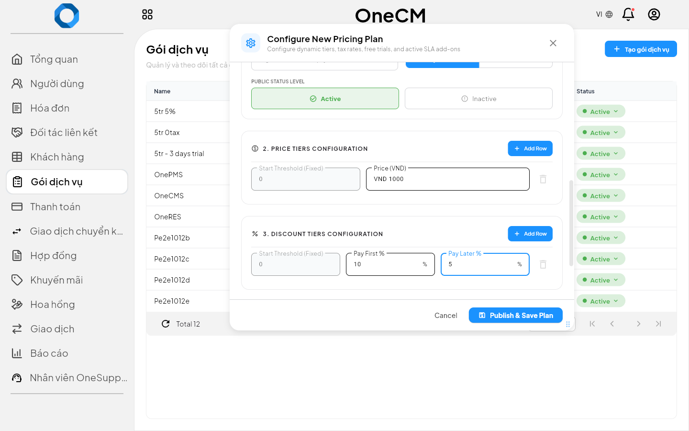
planId, tiền tệ, thuế, trial và giá/chiết khấu theo quantity/monthPaid. Sau đó nhân viên có thể sửa giá/chiết khấu nếu có quyền; xem Tạm tính chứ không mặc định giá Plan luôn là tổng cuối cùng. Bill về sau lấy snapshot từ Contract đã lưu.Thanh toán
Dùng mục này cho một trong hai việc: ghi nhận tiền khách trả hóa đơn, hoặc ghi nhận tiền nạp vào ví khách hàng.
| Bạn muốn làm gì? | Cách nhập | Kiểm tra trước khi lưu |
|---|---|---|
| Trả hóa đơn | Chọn khách hàng, sau đó chọn hóa đơn chưa thanh toán. Chọn cách khách trả: tiền mặt, chuyển khoản, thẻ tín dụng hoặc dùng tiền trong ví nếu đủ số dư. | Đúng khách hàng và đúng hóa đơn; các hóa đơn phải cùng loại tiền. |
| Nạp tiền vào ví | Chọn khách hàng, nhập số tiền lớn hơn 0, chọn loại tiền và cách nhận tiền. | Chỉ ghi nhận khi đã xác nhận thực sự nhận được tiền. Không chọn hóa đơn trong trường hợp này. |
- Bấm Lưu thanh toán. Lúc này khoản thanh toán mới được tạo và đang chờ kiểm tra; hóa đơn chưa được đánh dấu là đã trả.
- Đối chiếu khoản tiền với biên nhận, chứng từ hoặc xác nhận từ ngân hàng. Chỉ người có quyền phù hợp mới được bấm Xác nhận.
- Sau khi xác nhận, kiểm tra lại trạng thái ở danh sách Thanh toán và Hóa đơn. Nếu có lỗi hoặc hoàn tiền, báo người phụ trách; không tự xóa hay sửa để thử.
Các cách khách trả (Payment method)
| Cách khách trả | Dùng khi nào | Ghi nhận ở mục Giao dịch |
|---|---|---|
| Bank Transfer (chuyển khoản) | Khách chuyển tiền vào tài khoản công ty. Phải đối chiếu với sao kê hoặc thông báo biến động số dư. | Một dòng nhận tiền và một dòng trả hóa đơn. |
| Credit Card (thẻ tín dụng) | Khách trả bằng thẻ. Ghi nhận theo chứng từ của đơn vị thanh toán thẻ. | Một dòng nhận tiền và một dòng trả hóa đơn. |
| Cash (tiền mặt) | Khách trả tiền mặt tại quầy. | Một dòng nhận tiền và một dòng trả hóa đơn. |
| Wallet (ví khách hàng) | Trừ tiền có sẵn trong ví của khách. Chỉ dùng khi ví đủ số dư. | Chỉ một dòng trả hóa đơn. |
| Nạp tiền vào ví (mục tiêu WALLET) | Ghi tiền khách nạp trước vào ví để dùng cho các hóa đơn sau. Không chọn hóa đơn. | Một dòng nhận tiền vào ví. |
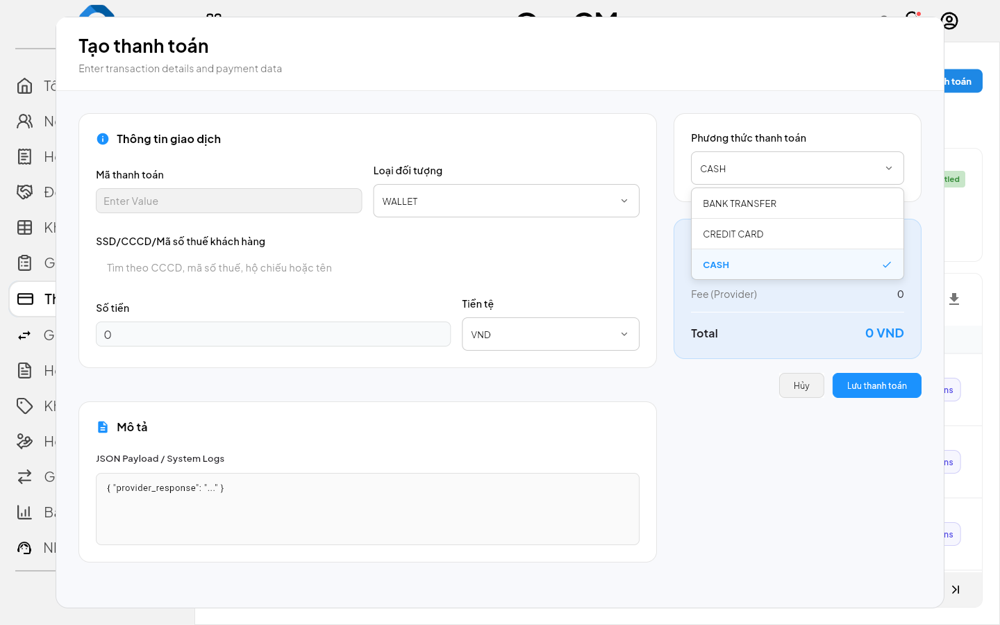
Bốn trạng thái của một khoản thanh toán
| Trạng thái | Nghĩa | Có thể làm gì |
|---|---|---|
| Pending (chờ xử lý) | Khoản vừa được tạo, chưa tác động hóa đơn hay ví. | Xác nhận khi tiền đã về; sửa hoặc xóa nếu cần. |
| Completed (đã xác nhận) | Khoản đã được xác nhận và hóa đơn/ví đã được cập nhật theo khoản này. | Hoàn tác (Revert) nếu chưa tất toán bằng thông báo ngân hàng. |
| Failed | Khoản không hoàn tất. Trạng thái này không tự nói là lỗi ngân hàng hay lỗi nhập liệu. | Kiểm tra chứng từ; tạo lại hoặc xóa nếu không dùng. |
| Refunded (đã hoàn/hủy) | Khoản đã bị hoàn hoặc hủy sau khi xác nhận (do hoàn tác hoặc xóa giao dịch trả hóa đơn). | Chỉ tra cứu; không sửa, không xác nhận lại. |
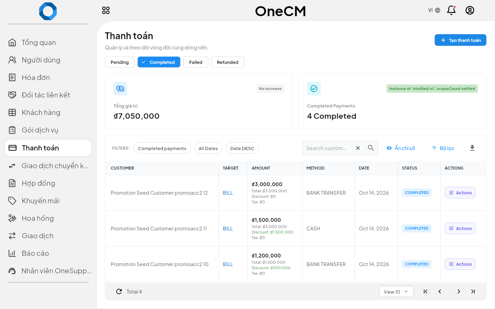
Bốn trạng thái là bốn tab lọc độc lập ở đầu danh sách. Nếu không thấy khoản đang tìm, hãy kiểm tra tab đang được chọn.
Xác nhận khoản thanh toán (Confirm)
- Mở khoản đang ở trạng thái Pending và đối chiếu số tiền, cách khách trả, khách hàng và hóa đơn với chứng từ thực tế.
- Chọn Actions rồi bấm xác nhận. Đọc kỹ hộp thoại Confirm Payment trước khi đồng ý.
- Chờ thông báo, sau đó mở lại Hóa đơn, Giao dịch và số dư ví (nếu dùng ví) để kiểm tra kết quả.
- Nếu chưa chắc tiền đã về, không bấm xác nhận. Để khoản ở Pending và báo người phụ trách.
Hoàn tác xác nhận (Revert)
Revert dùng khi khoản đã xác nhận nhưng cần hủy chính lần xác nhận đó. Điều kiện: khoản đang ở trạng thái Completed và chưa được tất toán bằng thông báo ngân hàng.
- Hóa đơn trở lại chưa thanh toán nhưng vẫn được khoản thanh toán giữ chỗ, nên phải sửa hoặc xóa khoản đó trước khi thu lại. Không tạo khoản mới chồng lên.
- Các dòng giao dịch của lần xác nhận bị hủy và ví được đưa về trạng thái trước đó. Với khoản nạp ví, hệ thống trừ lại phần đã cộng và có thể từ chối nếu số dư ví không đủ.
- Revert không phải lệnh hoàn tiền ra ngân hàng. Nếu đã chuyển tiền cho khách, đó là việc của kế toán, ngoài OneCM.
- Khoản đã tất toán bằng thông báo ngân hàng sẽ bị từ chối hoàn tác. Khi đó hãy dừng lại và báo kế toán.
Sửa và xóa khoản thanh toán
| Nút | Hiện khi nào | Tác dụng |
|---|---|---|
| Confirm | Khoản Pending | Xác nhận khoản thanh toán và cập nhật hóa đơn/ví. |
| Revert | Khoản Completed và chưa tất toán ngân hàng | Hủy xác nhận, đưa khoản về Pending. |
| Delete | Khoản Pending hoặc Failed | Xóa khoản chưa/không xác nhận. Khoản Completed phải hoàn tác trước, nếu không sẽ không xóa được. |
| Edit (trong Actions) | Mở được với khoản đang có, nhưng chỉ lưu khi khoản còn Pending | Chỉnh khoản rồi lưu lại. |
Khi sửa một khoản Pending, bạn đổi được cách khách trả và thêm hoặc bớt hóa đơn; hệ thống tính lại tổng tiền và phần giảm giá còn hợp lệ. Khách hàng, mục tiêu (trả hóa đơn hay nạp ví), mô tả, số tiền và loại tiền của bản ghi đang sửa bị khóa. Ô thêm voucher chỉ có khi tạo mới; một số trường hợp còn cho gỡ voucher đã áp dụng, nếu không thấy nút gỡ thì đừng tự sửa số tiền.
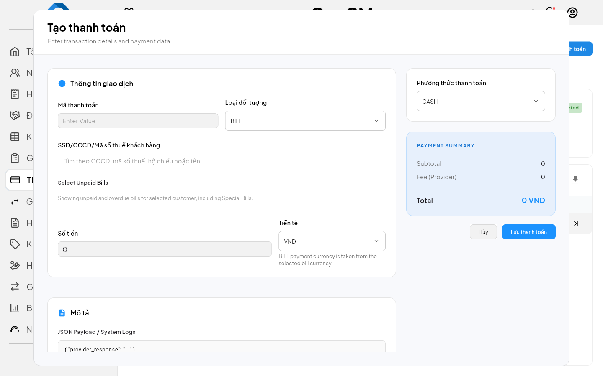
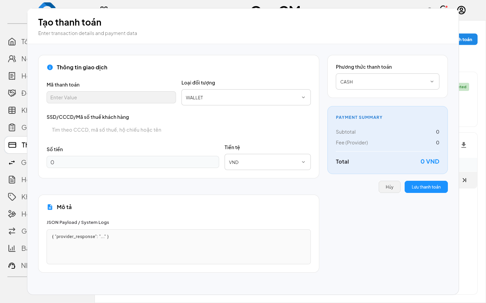
Đối chứng luồng thực trên test 12/10/2026: form Payment từ Bill, xác nhận, màn Completed.


Giao dịch chuyển khoản
Dùng mục này để kiểm tra thông báo tiền chuyển đến hoặc chuyển đi qua ngân hàng.
- Chọn khoảng ngày và xem các giao dịch tiền vào hoặc tiền ra.
- So sánh mã giao dịch, số tiền, nội dung chuyển khoản và khách hàng với hồ sơ thanh toán trong OneCM.
- Nếu thông báo ngân hàng khớp với khoản thanh toán đang chờ và số tiền đủ, hệ thống có thể tự cập nhật khoản đó. Nếu thừa tiền hoặc không tìm được khoản phù hợp, đừng tự ghép; báo kế toán hoặc người phụ trách để kiểm tra.
Hợp đồng
Hợp đồng ghi lại khách hàng sẽ dùng gói dịch vụ nào, bắt đầu khi nào và cần trả bao nhiêu.
- Tạo hợp đồng
- Đổi ngày bắt đầu
- Đổi ngày kết thúc
- Thời gian dùng thử
- Bill bị chặn
- Ảnh hưởng của các field
- Khách sạn / App ID
- Các nút / quyền
- Nhập tên hợp đồng. Tìm khách hàng bằng số Căn cước công dân, mã số thuế hoặc số hộ chiếu. Khi thấy đúng người/đơn vị trong danh sách gợi ý, bấm chọn và kiểm tra thẻ thông tin hiện ra.
- Mở phần chọn gói dịch vụ, chọn gói đang được bán. Kiểm tra giá, giảm giá, loại tiền, thuế và dịch vụ cộng thêm. Nếu không thấy gói, làm theo hướng dẫn ở mục Gói dịch vụ.
- Chọn ngày bắt đầu, số lượng và khoảng thời gian khách trả tiền mỗi lần. Kiểm tra số tiền trả trước và ngày kết thúc nếu có. Tùy chọn tự gia hạn hoặc tự dùng tiền trong ví ảnh hưởng đến các khoản thu sau này; chỉ bật nếu đã được khách hàng và người quản lý chấp thuận.
- Đọc phần Số tiền dự kiến. Ví dụ: gói giá 1.000 đồng, giảm 10%, không tính thuế thì số tiền dự kiến là 900 đồng. Nếu con số không đúng với thỏa thuận, dừng lại và hỏi người phụ trách.
- Trước khi lưu, kiểm tra lại tên khách hàng, gói, ngày bắt đầu, số tiền và thời hạn. Bấm Tạo hợp đồng một lần rồi đợi kết quả.
- Quay lại danh sách và tìm hợp đồng vừa tạo. Nếu không thấy hoặc chưa rõ đã lưu hay chưa, đừng bấm tạo lần nữa; hỏi người quản lý kiểm tra trước để tránh tạo trùng hợp đồng.
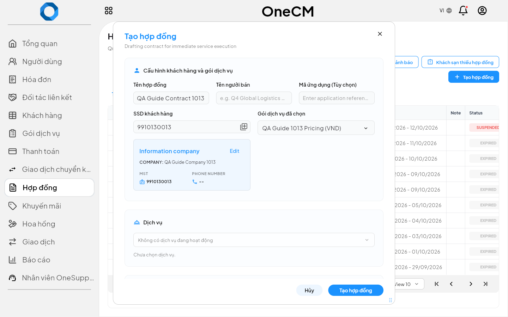
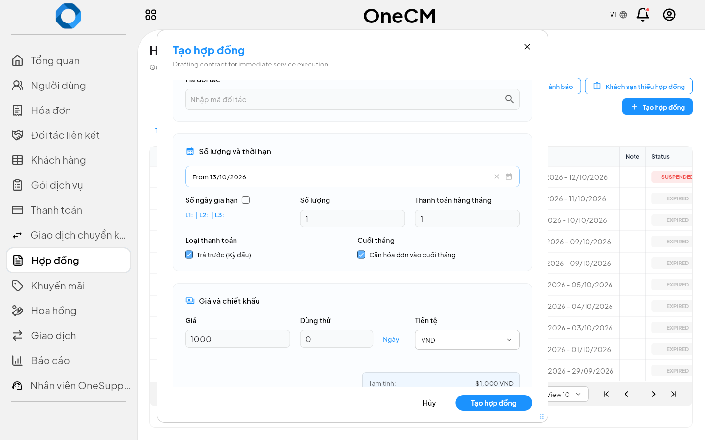

Đổi ngày bắt đầu (Start Date)
Start Date là mốc neo cho thời gian dùng thử và các kỳ Bill. Sửa ngày này có thể dựng lại lịch Bill; hệ thống kiểm tra lại ngày kết thúc theo chu kỳ trước khi lưu.
- Nếu
monthPaid > 1,endDatecó giá trị phải khớp một số nguyên chu kỳ tính từ Start Date:addMonths(startDate, monthPaid × n) − 1 ngày. NếumonthPaid = 1, End Date có thể vào hoặc sau Start Date. Bỏ trống End Date nghĩa là hợp đồng không có ngày kết thúc. - Mọi Bill còn hoạt động — chưa ở trạng thái Đã hủy hoặc Thùng rác — đều có thể chặn đổi Start Date, gồm Bill chưa trả, đã trả, quá hạn và Bill dùng thử. Màn hình liệt kê các Bill chặn; không có nút bỏ qua để ép lưu.
- Bill đã trả hoặc dữ liệu thuộc kỳ kế toán đã khóa là dữ liệu cần bảo vệ. Nếu gặp các trường hợp này, dừng lại và nhờ quản lý/kế toán xử lý; không xóa Bill đã trả để thử. Với Bill chưa trả hoặc Trial chỉ xử lý qua quy trình Bill và quyền được giao; Bill quá hạn cũng cần quản lý/kế toán xác nhận trước, không tự xóa để vượt chặn. Sau khi có hướng dẫn, mở lại Contract và gửi lại.
Đổi ngày kết thúc (End Date)
End Date giới hạn khoảng thời gian hợp đồng có thể tạo Bill định kỳ. Chọn đúng ý định trước khi sửa: gia hạn, mở không thời hạn, hay rút ngắn.
Để nhận diện kỳ và trạng thái Bill trên danh sách, xem ảnh minh họa ở mục Bill bị chặn; ảnh không thay thế cửa sổ cảnh báo thật.
- Gia hạn hoặc bỏ End Date: nếu Bill cuối chưa trả/quá hạn còn phủ tới mốc cũ, lần gửi đầu sẽ hiện cảnh báo. Chọn Generate continuation / Tiếp tục tạo kỳ mới để giữ Bill hiện tại; backend thử tạo Bill nối tiếp từ ngày sau
endPeriodtrong giới hạn End Date mới. Nếu End Date chưa tới ngày đó thì chưa có Bill nối tiếp mới. Xóa Bill là lựa chọn, không bắt buộc trong nhánh gia hạn này. Bill cuối đã trả không thể xóa để tạo lại; chỉ sinh tiếp khi End Date mới vươn tới ngày sauendPeriod(xem lưu ý lỗi bên dưới). - Rút ngắn End Date: nếu mốc mới cắt vào một Bill hoặc nằm trước một Bill đang hoạt động, Bill chưa trả/quá hạn bị ảnh hưởng phải được xóa theo quy trình được phép rồi mới gửi lại. Không có lựa chọn Continue/Ignore cho nhánh này. Nếu có Bill đã trả bị ảnh hưởng, hệ thống chặn cứng; không xóa/ép lưu mà hãy nhờ quản lý/kế toán xử lý.
- Bỏ trống End Date: biến hợp đồng có ngày kết thúc thành hợp đồng mở; với Bill chưa trả/quá hạn ở ranh giới cũ, vẫn có cảnh báo gia hạn như trên.
endPeriod) của Bill cuối đã trả, backend có thể lưu hợp đồng mà không tạo Bill nối tiếp, để End Date nằm bên trong kỳ Bill đã trả. Khác với nhánh rút ngắn, nơi Bill đã trả bị ảnh hưởng sẽ chặn cứng. Dừng và nhờ quản lý xác nhận; không xóa Bill để vượt chặn.Đổi thời gian dùng thử (Trial)
Trong phần Giá và chiết khấu, nhập số ngày hoặc số tháng rồi bật đúng đơn vị. Backend lưu cả trial và trialIsMonth; đổi đơn vị mà giữ nguyên con số sẽ làm đổi độ dài dùng thử.
- Trial tính từ Start Date: ngày = Start Date + số ngày − 1; tháng = addMonths(Start Date, số tháng) − 1 ngày. Nếu Trial vượt End Date, backend cắt Trial ở End Date. Bill dùng thử kết thúc ở ngày cuối khoảng Trial, Bill định kỳ đầu tiên bắt đầu ngày kế tiếp. Trial ảnh hưởng lịch và Trial Bill, không trừ khỏi tổng giá Contract.
- Trial Bill giữ giá trị dịch vụ để đối chiếu nhưng có chiết khấu toàn phần nên số tiền phải trả là 0. Khi đổi thời gian Trial, Bill dùng thử có thể được cập nhật/tạo lại và các Bill định kỳ đã đến hạn sau Trial có thể được tạo lại.
- Nếu còn Bill định kỳ chưa trả, backend trả danh sách chặn và yêu cầu xử lý Bill đó trước. Bill định kỳ đã trả hoặc quá hạn chặn cứng thay đổi Trial. Không xóa Trial/regular Bill tùy tiện; kiểm tra Bill nào được phép xử lý, rồi xem lại Trial Bill và Bill định kỳ đầu tiên sau khi cập nhật.
Khi cửa sổ báo Bill đang chặn xuất hiện
| Thao tác | Điều kiện / nút có thể thấy | Có cần xóa Bill? |
|---|---|---|
| Gia hạn hoặc bỏ End Date | Bill cuối chưa trả/quá hạn còn chạm ranh giới cũ; có thể có nút Generate continuation. | Không bắt buộc. Continue giữ Bill ranh giới; backend chỉ sinh tiếp khi End Date mới cho phép bắt đầu sau endPeriod. Xóa chỉ khi có lý do nghiệp vụ riêng. |
| Rút ngắn End Date | Bill chưa trả/quá hạn bị cắt; không có Ignore/Continue. Bill đã trả gây lỗi chặn cứng. | Bill chưa trả/quá hạn bị ảnh hưởng phải được xử lý/xóa hợp lệ rồi thử lại. Bill đã trả không được xóa để vượt chặn. |
| Đổi Start Date | Bill đang hoạt động gồm đã trả, chưa trả, quá hạn hoặc Trial xuất hiện trong danh sách; Bill đã hủy/thùng rác không chặn. | Không có bypass. Bill đã trả/kỳ khóa kế toán → dừng và chuyển quản lý/kế toán; Bill khác chỉ xử lý theo quyền/quy trình Bill. |
Đổi monthPaid | Chỉ Bill định kỳ status 0 (chưa trả, không phải Trial) được liệt kê. Bill status 2 (quá hạn) không nằm trong blocker này. | Bill status 0 chỉ được thay/xóa theo lựa chọn được phép. Bill quá hạn có thể còn hoạt động khi chu kỳ đổi; rà soát và nhờ quản lý/kế toán xác nhận trước, vì blocker này không xử lý nó. |
| Đổi Trial | Bill định kỳ chưa trả trả về danh sách; Bill định kỳ đã trả/quá hạn chặn cứng. | Bill định kỳ chưa trả cần được xử lý trước. Bill đã trả/quá hạn không được xóa để đổi Trial. |
Status thường gặp: 0 = chưa trả, 1 = đã trả, 2 = quá hạn, 3 = đã hủy, 4 = thùng rác. Trial Bill (isTrial) là loại riêng; nó có thể mang status 1 nhưng vẫn chặn đổi Start Date, nên không suy ra chỉ từ status. Nếu cửa sổ chỉ có danh sách Bill và không có Continue, đừng tìm cách ép lưu; xem đúng loại thao tác ở bảng trên.
Field nào ảnh hưởng đến dữ liệu khác?
| Field trong Contract | Ảnh hưởng chính sau khi lưu | Bill hiện có |
|---|---|---|
startDate, endDate, monthPaid, isAlignToEndMonth (căn cuối tháng), isPrepaid | Start/end/monthPaid/alignment neo ngày và độ dài kỳ, có thể phát sinh blocker hoặc rebuild/generate Bill; isPrepaid chọn kiểu trả trước/trả sau và ảnh hưởng cách tính Bill mới. | Bill đang hoạt động có thể chặn đổi ngày/chu kỳ; payment mode và số tiền Bill cũ không tự tính lại. |
trial + trialIsMonth | Đổi ngày kết thúc Trial, Trial Bill và ngày bắt đầu Bill định kỳ. | Trial Bill được cập nhật/tạo lại; Bill định kỳ chưa trả cần xử lý, Bill đã trả/quá hạn chặn cứng. Tổng giá Contract không bị trừ theo Trial. |
| Giá, số lượng, thuế, tiền tệ, Contract Services | Đổi preview/tổng Contract và cách tính các Bill được tạo sau đó. | Với Bill của Contract (trừ invoice, đã hủy, thùng rác), update có thể đồng bộ metadata như monthPaid, planName, price, currency, taxPercentage, thông tin Customer/Merchant và tên item trên Bill. Việc này không tính lại amount, Service hay Promotion snapshot đã lưu; đối chiếu số tiền trên Bill trước khi báo hoặc thu. |
| Promotion / mã giảm | Đổi snapshot áp dụng cho Bill được tạo về sau. | Bill hiện có — kể cả chưa trả — giữ snapshot và số tiền đã lưu; không đổi ngược chỉ bằng cách bỏ Promotion trên Contract. |
| Auto Pay của Contract | Form tạo mới có thể điền sẵn từ Customer; sau khi lưu, scheduler chỉ dùng Contract.autoPay để chọn Bill mới đủ điều kiện tự trả bằng ví, khi Wallet đủ số dư. Customer.autoPay không phải điều kiện thứ hai. | Không tự bật/tắt thanh toán cho Bill cũ. |
extendedDays, noCheckOver | Đổi ngưỡng cảnh báo/quy tắc bỏ qua kiểm tra quá hạn của Bill định kỳ đang hoạt động. | Các Bill regular đang hoạt động được đồng bộ setting; không đổi số tiền Bill. |
| Contract Status (Active/Suspended/Expired/Deleted) | Dừng/tiếp tục tạo Bill về sau; có thể khóa/mở ứng dụng của Hotel liên kết và đổi Contract nào được tính là đang hoạt động. | Bill cũ không biến mất. Resume có thể bị chặn nếu còn Bill quá hạn; xem trang Các nút / quyền. |
| Partners / giới thiệu | Gắn phân bổ doanh thu cho đối tác và ảnh hưởng báo cáo/hoa hồng. | Partner attribution trên Bill có thể được đồng bộ; kiểm tra lại Bill và báo cáo hoa hồng, không giả định số tiền Bill đổi. |
Customer / cusId | Đổi khách hàng sở hữu Contract, liên kết Contract trong hồ sơ Customer và thông tin liên quan trên Bill. | Kiểm tra đúng Customer và quyền trước khi chuyển. |
appID (Hotel ID) | Liên kết Contract với hồ sơ khách sạn OnePMS; cờ Contract và quyền truy cập khách sạn có thể được đồng bộ. | Không phải quyền truy cập nhân viên; chỉ nhập Hotel ID chính xác. |
contractName, appName | contractName đổi từ khóa/tên Contract; appName đổi Merchant Name và từ khóa liên quan. | appName có thể cập nhật thông tin hiển thị trên Bill; không đổi số tiền Bill. |
Liên kết khách sạn OnePMS (Hotel Missing Contract / App ID)
Nút Hotels Missing Contract mở danh sách khách sạn mà OneCM đang ghi nhận là chưa gắn với hợp đồng nào còn trong hệ thống. Đây là màn hình chỉ xem: bạn có thể tìm theo tên, xem trạng thái/nguyên nhân dừng, chuyển trang (mỗi lần tải kiểm tra tối đa 10 khách sạn; trang có thể không có kết quả và vẫn còn trang tiếp theo) và bấm biểu tượng sao chép để lấy Hotel ID. Nút này không tự tạo hợp đồng và không sửa thông tin khách sạn.
App ID (optional) dùng để làm gì?
Trong biểu mẫu hợp đồng, Merchant Name là tên để nhân viên đọc và tìm; App ID (optional) là mã nhận diện chính xác của khách sạn OnePMS. Nếu hợp đồng dành cho một khách sạn trong OnePMS, hãy sao chép Hotel ID từ danh sách trên và dán vào App ID. Nếu không quản lý khách sạn OnePMS, để trống.
- App ID nối hợp đồng với đúng hồ sơ khách sạn; danh sách hợp đồng/hóa đơn của một khách hàng cũng có thể lọc theo mã này để tìm hồ sơ của riêng khách sạn đó.
- Khi tạo hợp đồng có App ID, khách sạn đó phải tồn tại. OneCM cũng không cho gắn thêm một hợp đồng đang hoạt động nếu khách sạn đã được một hợp đồng khác đang hoạt động sử dụng.
- App ID không cấp quyền xem cho nhân viên. Quyền vẫn theo khách hàng và quyền được quản lý cấp. Khi liên kết được tạo, OneCM tự cập nhật trạng thái liên kết khách sạn; không cần tự sửa cờ trạng thái.
Các nút trên trang Hợp đồng
Một số nút chỉ hiện hoặc chỉ chạy được khi tài khoản của bạn có quyền tương ứng. Nếu không thấy nút hoặc gặp thông báo từ chối, hãy nhờ người quản lý cấp quyền; không dùng tài khoản của người khác.
| Nút trên màn hình | Dùng để làm gì và cần điều kiện gì? |
|---|---|
| Create Contract | Tạo hợp đồng mới. Cần chọn đúng khách hàng đang hoạt động, khách hàng đã lưu loại hồ sơ, và gói dịch vụ đang được bán. Nếu điền App ID, mã phải trỏ tới khách sạn có thật và không bị hợp đồng đang hoạt động khác giữ. |
| Actions → Edit | Sửa hợp đồng. Không sửa được hợp đồng đã xóa; hãy dùng Reactivate trước. Nếu OneCM báo hợp đồng bị tài liệu đã khóa bảo vệ hoặc đang nằm trong nhiều tài liệu hiện hành, hãy dừng và nhờ người có quyền xử lý trong mục Tài liệu hợp đồng; không tự mở khóa. Ngày bắt đầu trong kỳ kế toán đã khóa cũng bị từ chối. |
| Đổi ngày hoặc chu kỳ thanh toán | Ngày bắt đầu, ngày kết thúc, dùng thử hoặc số tháng trả mỗi lần có thể làm thay đổi các hóa đơn đã tạo. Nếu OneCM hiện danh sách hóa đơn bị chặn, hãy xử lý từng hóa đơn theo hướng dẫn rồi mới lưu lại. Hóa đơn đã thanh toán không thể xóa để vượt qua cảnh báo. |
| Gia hạn / rút ngắn hợp đồng | Chỉ khi gia hạn ngày kết thúc và màn hình cảnh báo cho phép, bạn mới có thể chọn tiếp tục mà giữ hóa đơn chưa trả ở ranh giới kỳ và để hệ thống tạo kỳ tiếp theo. Nếu rút ngắn ngày kết thúc, không có lựa chọn bỏ qua: phải xử lý các hóa đơn chưa trả/quá hạn bị ảnh hưởng; hóa đơn đã trả sẽ chặn thao tác. |
| Actions → Add coupon | Gắn mã ưu đãi vào hợp đồng. Mã phải còn hạn, còn lượt dùng và đúng điều kiện áp dụng. Mức giảm được áp dụng cho các hóa đơn chưa thanh toán theo quy tắc của mã. Nếu OneCM báo hợp đồng bị tài liệu đã khóa bảo vệ hoặc đang nằm trong nhiều tài liệu hiện hành, hãy dừng và nhờ người có quyền xử lý trong mục Tài liệu hợp đồng; không tự mở khóa. |
| Actions → Suspend | Chỉ dùng với hợp đồng đang hoạt động và cần quyền tạm ngưng. Hộp xác nhận có hai lựa chọn: Lock App completely khóa ứng dụng khách hàng và dừng tạo hóa đơn; Stop Billing only giữ ứng dụng chạy nhưng dừng tạo hóa đơn mới. Chọn theo quyết định đã được duyệt. |
| Actions → Resume | Chỉ dùng với hợp đồng đang tạm ngưng và cần quyền tiếp tục. Nếu còn hóa đơn quá hạn, OneCM sẽ mở danh sách cần xử lý và chưa tiếp tục hợp đồng cho tới khi điều kiện được giải quyết. |
| Actions → View Bills | Mở các hóa đơn thuộc hợp đồng để kiểm tra kỳ, số tiền và trạng thái. Sửa/xóa hóa đơn là thao tác riêng và cần quyền phù hợp. |
| Actions → Delete Contract | Xóa mềm (ẩn khỏi danh sách thường, không xóa vĩnh viễn) và có thể Reactivate lại. Trước khi xóa, hợp đồng không được còn hóa đơn chưa trả, đã trả hoặc quá hạn. Nếu còn, OneCM liệt kê hóa đơn cần xử lý; hóa đơn đã trả không thể xóa, nên phải dừng và hỏi quản lý/kế toán. Nếu OneCM báo hợp đồng bị tài liệu đã khóa bảo vệ hoặc đang nằm trong nhiều tài liệu hiện hành, hãy dừng và nhờ người có quyền xử lý trong mục Tài liệu hợp đồng; không tự mở khóa. |
| Reactivate | Chỉ hiện với hợp đồng đã xóa mềm. Dùng để khôi phục hợp đồng; nếu sau khi khôi phục hợp đồng sẽ hoạt động nhưng khách sạn đã được hợp đồng đang hoạt động khác sử dụng, OneCM sẽ từ chối; hãy nhờ người quản lý xử lý xung đột. |
| Check Bill Integrity | Chạy bảo trì để rà soát tính khớp giữa hợp đồng và hóa đơn, đồng thời đánh dấu trường hợp thiếu hóa đơn. Đây không phải nút tạo hóa đơn thông thường; chỉ người được giao kiểm tra dữ liệu mới nên chạy. |
| Warning Config | Thiết lập ba mốc số ngày quá hạn: cảnh báo lần 1, cảnh báo lần 2 và mốc khóa/ngừng hợp đồng. Thay đổi có thể ảnh hưởng cách hệ thống xử lý hóa đơn quá hạn; chỉ lưu khi đã được người quản lý duyệt. |
Tài liệu hợp đồng
Mục này nằm bên trong phần Hợp đồng. Dùng để tạo bản tài liệu từ hợp đồng đã có hoặc tải lên bản PDF.
- Trước khi tạo, kiểm tra mẫu tài liệu và thông tin pháp lý của công ty. Nếu thiếu mẫu hoặc thông tin, nhờ người quản lý thiết lập trước.
- Để tạo tài liệu theo mẫu, tìm khách hàng, chọn hợp đồng phù hợp, chọn mẫu rồi xem trước nội dung và số tài liệu.
- Để tải tài liệu PDF, chọn đúng tệp trên máy tính và kiểm tra lại tên, nội dung, số tài liệu trước khi lưu.
- Bản Nháp chỉ là bản dự thảo, chưa phải bản chính thức hoặc bản đã ký. Chỉ chuyển thành bản chính thức, khóa, mở khóa hoặc thay thế khi được người có thẩm quyền cho phép.
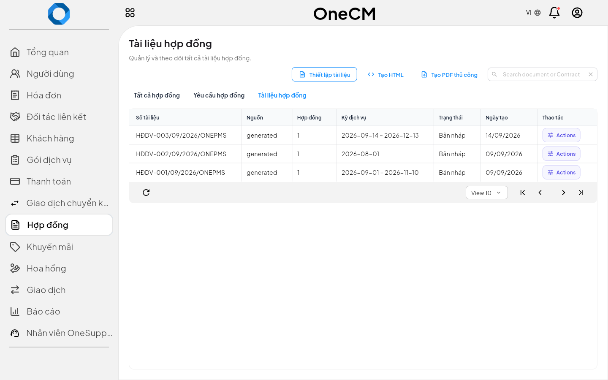
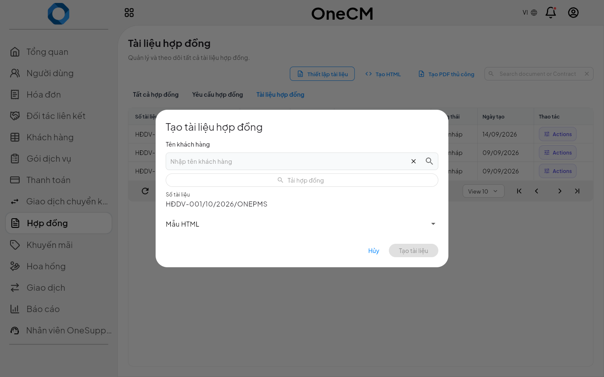
Khuyến mãi
Khuyến mãi là mức giảm giá hoặc mã ưu đãi dùng cho hợp đồng hay hóa đơn. Màn hình này có tên trường bằng tiếng Anh; phần dưới ghi rõ từng chỗ cần nhập. Hãy xác định loại khuyến mãi trước khi tạo, vì mỗi loại dùng ở màn hình khác nhau.
Chọn đúng loại (trường Type)
- Promotion — khuyến mãi tự áp dụng: hệ thống tự kiểm tra và giảm giá cho hợp đồng, hóa đơn hoặc cả hai. Nhân viên không cần nhập mã.
- Voucher — phiếu giảm giá: dùng để giảm một hóa đơn. Có thể giảm theo số tiền, theo phần trăm hoặc theo số tháng.
- Coupon — mã ưu đãi: khách hàng hoặc nhân viên nhập mã vào hợp đồng/hóa đơn. Mã chỉ có tác dụng khi còn hạn và đúng điều kiện.
- Partner Code — mã đối tác: một chương trình giảm giá gắn với đối tác. Đây không phải ô Partner Code dùng để gắn đối tác vào hợp đồng; xem phần Partner Code và đối tác bên dưới.
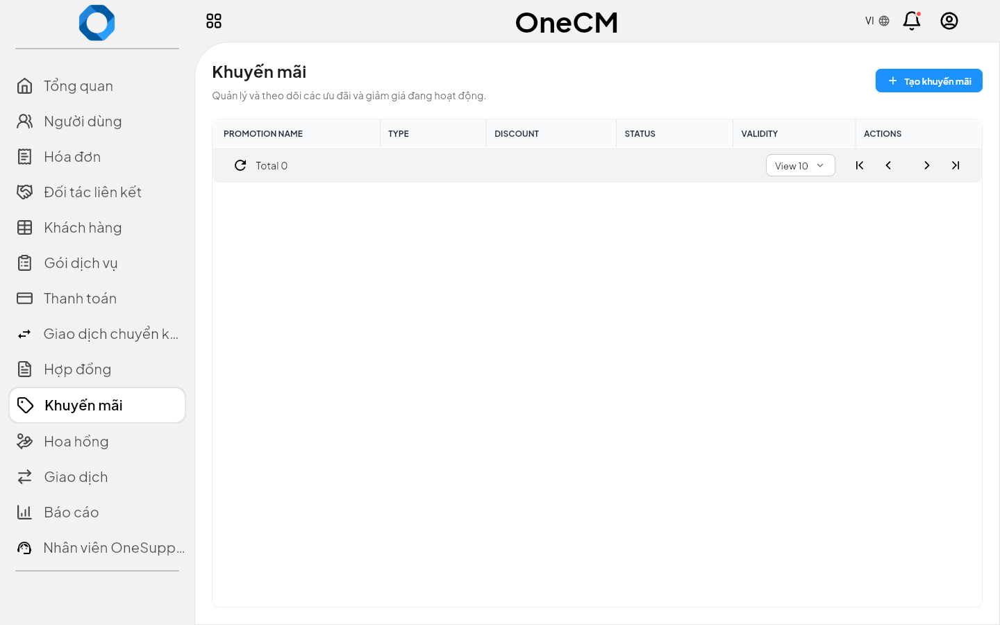
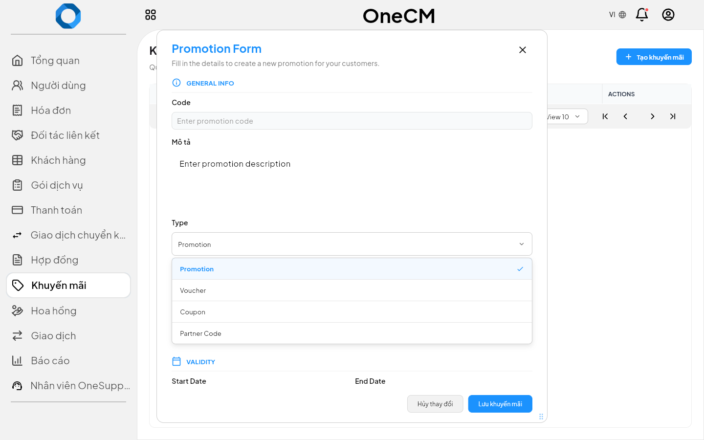
Tạo khuyến mãi mới
- Bấm Tạo khuyến mãi để mở biểu mẫu. Biểu mẫu chia thành các phần: GENERAL INFO (thông tin chung), DISCOUNT DETAILS (mức giảm), VALIDITY (thời hạn), LIMITS & STATUS (giới hạn và trạng thái), CONDITIONS (điều kiện).
- Code: nhập mã khách sẽ nhập lại. Mã gồm chữ và số, không có khoảng trắng. Mô tả: viết ngắn gọn mục đích chương trình để đồng nghiệp hiểu.
- Type: bấm ô này và chọn một trong bốn loại ở trên. Sau khi chọn, biểu mẫu hiện thêm các ô phù hợp với loại đó.
- Discount Amount: nhập mức giảm, ví dụ
20hoặc15%. Is Percentage? bật ON nếu con số là phần trăm; để OFF nếu là số tiền. Với loại Voucher, ô Discount Type cho chọnAmount ($)(giảm tiền) hoặcMonth(giảm số tháng); chọnMonththì nhập số tháng, không nhập số tiền. - Start Date và End Date: bấm Choose start date / Choose end date để chọn ngày. Chương trình chỉ dùng được trong khoảng này; để trống ngày kết thúc nếu không có hạn.
- Số lần dùng tối đa: nhập số lượt được phép dùng, để trống nếu không giới hạn. Current là số lượt đã dùng, chỉ để xem.
- Active Status: ON để cho phép dùng, OFF để tạm ngừng. Stackable with other deals: ON nghĩa là được cộng chung với ưu đãi khác; chỉ bật khi chương trình cho phép.
- Đối tượng áp dụng (chỉ hiện với loại Promotion): chọn Contract Only (chỉ hợp đồng), Bill Only (chỉ hóa đơn) hoặc Both (cả hai).
- Is Unique Codes (với Voucher/Coupon mới): tắt nếu muốn tạo nhiều mã riêng cho từng khách; bật nếu dùng một mã chung. Với Voucher còn có Single Bill Only để giới hạn phiếu chỉ dùng cho một hóa đơn.
- Đọc lại toàn bộ rồi bấm Lưu khuyến mãi. Bấm Hủy thay đổi nếu muốn đóng mà không lưu.
Đặt điều kiện (phần CONDITIONS)
- Bấm Add Rule để thêm một điều kiện. Bấm Add Group để thêm một nhóm điều kiện lồng bên trong, dùng khi cần kết hợp nhiều mức điều kiện.
- Ở ô Select Field, chọn thông tin cần kiểm tra. Danh sách có: Plan Name, Discount, Is Prepaid, Month Paid, Price, Quantity, Status, Trial Value, Membership, Months Used, Start Date, End Date, Currency và các trường của hóa đơn như Bill Start Period, Bill End Period, Bill Amount, Bill Is Prepaid, Bill Currency.
- Chọn cách so sánh:
==(bằng),!=(khác),>,>=,<,<=(lớn hơn/nhỏ hơn),invànot-in(nằm trong / không nằm trong danh sách, nhập các giá trị cách nhau bằng dấu phẩy). - Nhập giá trị cần so sánh. Bấm biểu tượng thùng rác ở cuối dòng để xóa điều kiện.
- Ở đầu nhóm chọn AND nếu phải đúng tất cả điều kiện, chọn OR nếu chỉ cần đúng một điều kiện. Nếu chưa chắc, đừng tự đặt điều kiện; hỏi người thiết kế chương trình.
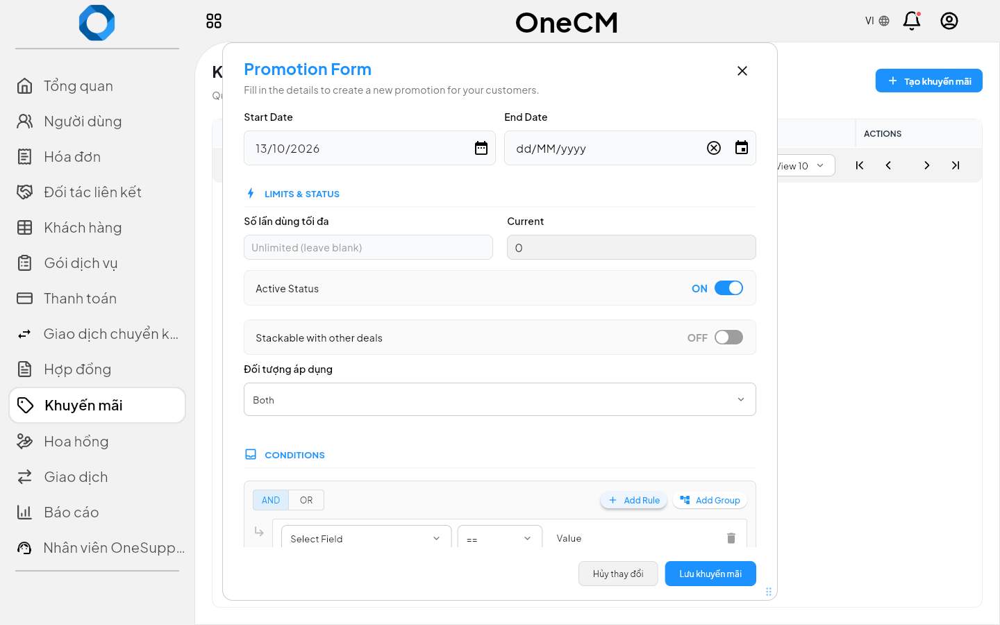
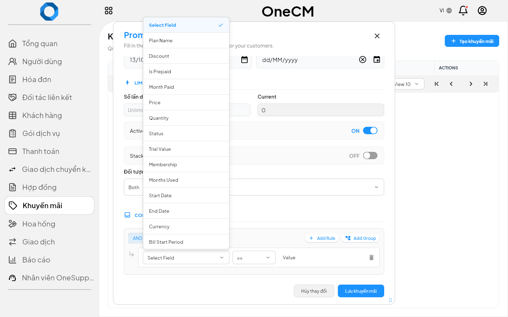
Các nút trong danh sách khuyến mãi
- Tạo khuyến mãi: mở biểu mẫu tạo chương trình mới.
- Sửa (biểu tượng bút chì trong cột ACTIONS): mở chương trình để chỉnh. Ô mã bị khóa với chương trình đã tạo.
- Set Active / Set Inactive (biểu tượng play/pause): bật hoặc tạm ngừng chương trình. Tắt không xóa lịch sử đã dùng.
- Generate Codes (biểu tượng tia sáng): chỉ có với chương trình cho phép tạo nhiều mã. Nhập phần đầu mã nếu cần, nhập số lượng rồi bấm Generate. Sao chép mã và gửi đúng người nhận; không chia sẻ công khai mã dành riêng.
- Delete (biểu tượng thùng rác): xóa chương trình. Hộp thoại hỏi lại; thao tác này không khôi phục được, chỉ xóa khi chắc chắn.
- View 10 (góc dưới bên phải): đổi số dòng hiển thị mỗi trang. Cột STATUS cho biết chương trình đang Active, Scheduled (chưa tới ngày), Expired (hết hạn) hay Inactive.
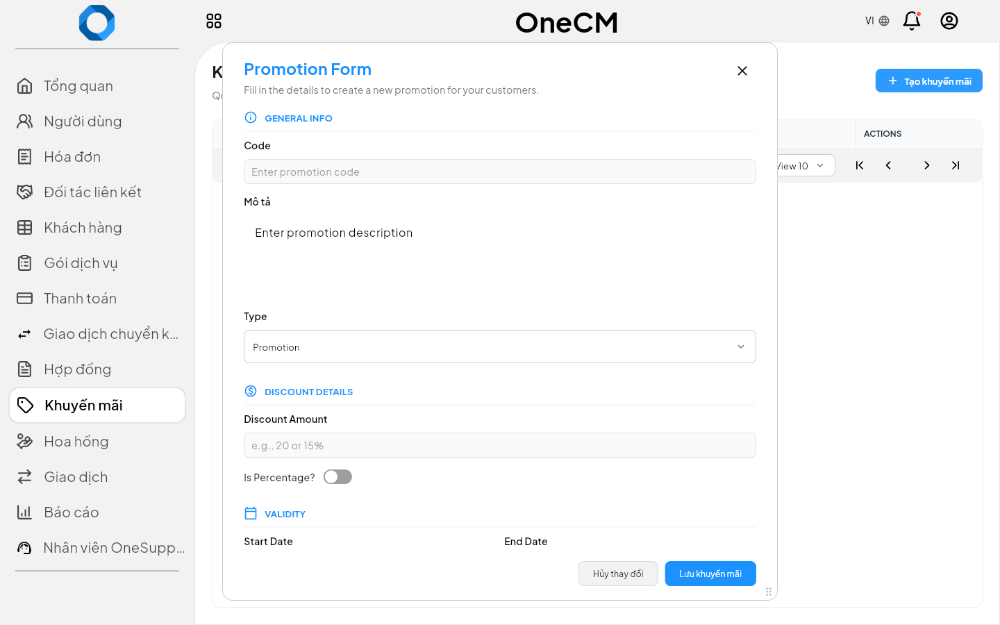
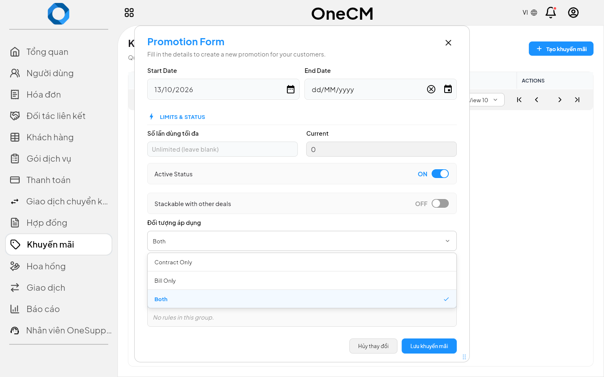
Dùng mã trong hợp đồng
- Mở hợp đồng cần lập và tìm ô Áp dụng mã ưu đãi.
- Nhập mã rồi bấm nút tìm/áp dụng ở cuối ô hoặc nhấn Enter. Chờ hệ thống kiểm tra.
- Nếu mã hợp lệ, thẻ ưu đãi sẽ xuất hiện bên dưới. Kiểm tra số tiền giảm và số tiền dự kiến của hợp đồng.
- Muốn bỏ mã đã áp dụng, bấm dấu × trên thẻ ưu đãi. Kiểm tra lại số tiền trước khi lưu hợp đồng.
- Nếu mã không được chấp nhận, kiểm tra chính tả, ngày sử dụng, loại hồ sơ và điều kiện của chương trình. Không sửa giá bằng tay để thay cho mã bị từ chối.
Nếu chương trình tự áp dụng, hệ thống sẽ tự kiểm tra điều kiện khi lập hợp đồng; bạn không cần nhập mã. Dù vậy, hãy kiểm tra số tiền sau giảm. Không phải loại khuyến mãi nào cũng nhập được trong hợp đồng: một số loại chỉ dùng cho hóa đơn hoặc đối tác.
Partner Code: hai việc khác nhau
Trong OneCM có hai thứ tên gần giống nhau, rất dễ lẫn:
- Loại khuyến mãi “Partner Code” trong ô Type của mục Khuyến mãi: là một chương trình giảm giá gắn với đối tác.
- Ô Mã đối tác trên hợp đồng (phần Chi tiết hoa hồng và đối tác): là nơi gắn đối tác giới thiệu để tính hoa hồng. Ô này không phải ô Coupon/“Áp dụng mã ưu đãi”.
- Muốn đối tác được hưởng hoa hồng: dùng ô Partner Code khi tạo hợp đồng, không nhập vào ô mã ưu đãi.
- Mã phải do đối tác hoặc người quản lý cung cấp, và đối tác phải đang ở trạng thái hoạt động.
- Kiểm tra lại phần đối tác ngay trước khi lưu hợp đồng. Khi sửa hợp đồng đã lưu, ô này chỉ để xem nên không thể bổ sung đối tác sau.
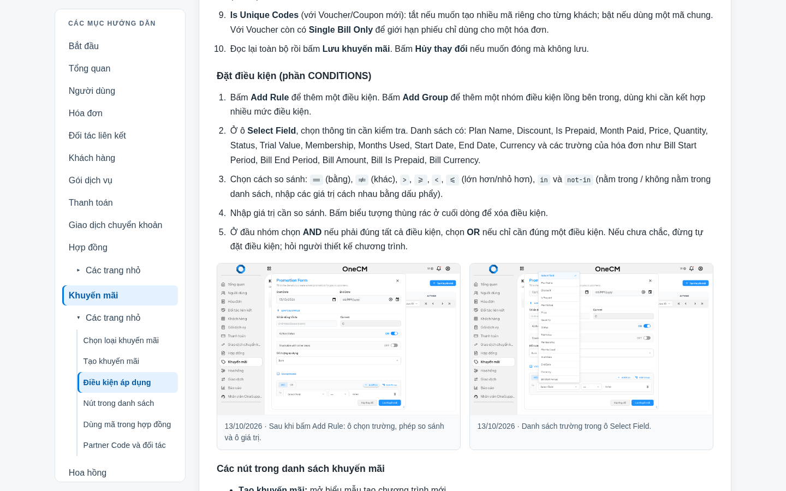
Màn hình ngày 13/10/2026 được mở và chụp bằng Playwright trên dự án thử nghiệm onepms---test; danh sách trống nên không có chương trình nào được lưu. Dùng mục “Các trang nhỏ” dưới Khuyến mãi ở thanh bên, hoặc các nút phía trên, để nhảy nhanh tới từng phần.
Hoa hồng
Mục này giúp kiểm tra khoản tiền công ty ghi nhận cho đối tác đã giới thiệu khách hàng.
- Chọn đối tác và khoảng thời gian cần xem.
- Đối chiếu từng khoản với hợp đồng và khoản thanh toán liên quan. Nếu số tiền khác với thỏa thuận, hỏi người phụ trách trước khi điều chỉnh.
Đối chiếu một khoản hoa hồng
- Khoản hoa hồng chỉ sinh ra từ hóa đơn đã thanh toán và đủ điều kiện; hóa đơn dùng thử và hóa đơn bổ sung không tham gia.
- Hệ thống kiểm tra định kỳ vào đầu mỗi tháng theo giờ Việt Nam và gom cả các hóa đơn đủ điều kiện còn tồn từ kỳ trước. Vì vậy một khoản có thể xuất hiện muộn hơn ngày khách trả tiền.
- Mức hoa hồng lấy theo chế độ (mode) đã lưu trên hóa đơn và cấu hình hiện tại của đối tác. Sáu chế độ được giải thích ở mục Đối tác liên kết.
- Xác nhận hoa hồng là ghi có vào ví đối tác trong OneCM, không phải bằng chứng công ty đã chuyển tiền ra ngân hàng.
- Khi hóa đơn bị điều chỉnh, bị hoàn tác, hoặc giao dịch trả hóa đơn bị xóa, khoản hoa hồng liên quan cũng được điều chỉnh. Hãy đối chiếu lại sau các thao tác đó.
Danh sách thử nghiệm ngày 13/10/2026 không có khoản nào hiển thị.
Giao dịch
Đây là lịch sử biến động tiền của khách hàng (và ví đối tác). Mục này để tra cứu, không phải nơi tạo khoản thanh toán mới — nhưng có một thao tác xóa mà nhân viên được giao quyền cần biết khi tiền đã vào mà hóa đơn bị sai.
- Tìm khách hàng và khoảng ngày. Kiểm tra lý do giao dịch, số tiền và trạng thái.
- Dòng tiền vào thường là tiền nạp vào ví; dòng tiền ra thường là tiền lấy từ ví để trả hóa đơn. Nếu cần tính doanh thu, hãy dùng báo cáo phù hợp thay vì cộng tất cả các dòng ở đây.
Xem gì trên danh sách giao dịch
- Loại giao dịch và chiều tiền (IN/OUT): cho biết dòng này là tiền vào hay tiền ra và phát sinh từ việc gì.
- Cách thanh toán (tiền mặt, chuyển khoản, thẻ tín dụng, ví), trạng thái và số tiền.
- Đối tượng: khách hàng hoặc đối tác. Danh sách này gồm cả giao dịch ví đối tác.
- Liên kết tới khoản thanh toán và hóa đơn liên quan, cùng số dư ví trước/sau ở một số dòng.
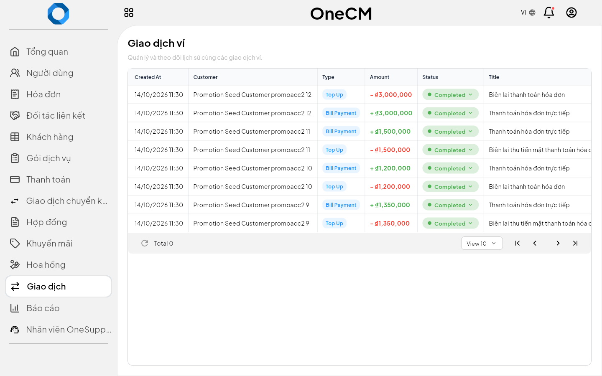
Cùng một dòng có thể được xem ở danh sách Giao dịch và ở cửa sổ ví của một khách hàng. Đọc theo loại/chiều tiền và liên kết, không chỉ theo màu.
IN / OUT và dấu +/−
IN là tiền được ghi tăng (ví dụ tiền khách nạp được ghi có vào ví). OUT là tiền bị trừ (ví dụ lấy từ ví để trả hóa đơn).
| Cách thanh toán | Giao dịch sinh ra |
|---|---|
| Tiền mặt, chuyển khoản, thẻ tín dụng | Một dòng nhận tiền (IN) và một dòng trả hóa đơn (OUT). |
| Ví khách hàng | Chỉ một dòng trả hóa đơn (OUT); tiền đến từ số dư ví đã có trước đó. |
| Nạp tiền vào ví | Một dòng nhận tiền (IN); chưa gắn với hóa đơn nào. |
+/− và màu được hiển thị theo hai góc nhìn khác nhau: ở danh sách Giao dịch tổng là góc nhìn dòng tiền, còn ở cửa sổ ví của một khách hàng là góc nhìn số dư của khách. Vì vậy cùng một dòng có thể trông ngược nhau ở hai nơi. Đừng kết luận tiền thật đã thu hay đã chi chỉ bằng màu; hãy xem trạng thái, cách thanh toán và liên kết hóa đơn.Đã nhận tiền nhưng hóa đơn sai — xóa giao dịch trả hóa đơn
Đây là cách xử lý khi khoản thanh toán đã được xác nhận và tiền thật đã vào tài khoản, nhưng hóa đơn bị sai (sai số tiền, sai kỳ, sai khách) nên cần thu lại đúng hóa đơn. Không dùng Revert cho trường hợp này, vì Revert chỉ hủy lần xác nhận chứ không phải quy trình sửa hóa đơn đã nhận tiền.
- Đối chiếu trước khi làm: xác định đúng khoản thanh toán và toàn bộ hóa đơn liên quan, ghi lại chứng từ ngân hàng/biên nhận. Nếu có nhiều hóa đơn, một thao tác xóa sẽ tác động tất cả các hóa đơn đó.
- Kiểm tra khoản thanh toán đang ở trạng thái Completed và kỳ kế toán của hóa đơn chưa bị khóa. Nếu kỳ đã khóa, dừng lại và báo kế toán.
- Trong danh sách Giao dịch, tìm dòng trả hóa đơn (OUT) của khoản thanh toán đó — không phải dòng nhận tiền. Dòng này chỉ cho xóa khi đã hoàn tất và có liên kết thanh toán/hóa đơn.
- Bấm biểu tượng xóa, đọc hộp thoại cảnh báo, rồi chỉ tiếp tục khi bạn có quyền và đã được phép.
- Kiểm tra lại ngay: hóa đơn trở về chưa thanh toán; khoản thanh toán chuyển sang Refunded; dòng trả hóa đơn chuyển Cancelled; dòng nhận tiền vẫn còn; các khoản hoa hồng gắn với hóa đơn đó được điều chỉnh.
- Sửa hóa đơn theo đúng quy trình hóa đơn, rồi thu lại bằng ví khi ví khách đã có tiền. Không ghi nhận thu tiền lần hai từ ngân hàng.
Ảnh minh họa ngày 17/10/2026 chụp danh sách Giao dịch trên onepms---test, chỉ mở xem. Hộp thoại xóa chưa chụp được vì nút xóa trong bảng không hiện ra cho công cụ chụp; nội dung hộp thoại lấy từ mã nguồn, không phải bằng chứng đã thao tác thành công. Tuyệt đối không chạy thử thao tác xóa để lấy ảnh.
Báo cáo
Báo cáo tổng hợp tình hình hóa đơn, khoản đã thu và khoản khách hàng còn nợ.
- Chọn khoảng thời gian và loại tiền. Nếu có nút làm mới, bấm nút đó rồi đợi số liệu tải xong.
- Lưu ý: báo cáo hóa đơn tính theo ngày hóa đơn; báo cáo tiền thu tính theo ngày nhận tiền. Vì vậy hai con số có thể khác nhau mà không nhất thiết là lỗi.
- Hóa đơn dùng thử có thể hiển thị riêng và không tính vào số tiền khách phải trả. Nếu cần giải thích chênh lệch, mở từng hóa đơn và hỏi kế toán.
- Không bấm nút khóa sổ kế toán nếu bạn không được giao việc này. Khóa sổ có thể ngăn thay đổi dữ liệu của kỳ đã chốt.
Nguồn tài liệu và lưu ý
Nội dung được đối chiếu với tài liệu sản phẩm và màn hình nhân viên OneCM. Ảnh được chụp trong môi trường thử nghiệm, không phải dữ liệu khách hàng thật. Toàn bộ ảnh nằm trong thư mục images/ ngay cạnh file HTML này. Khi chia sẻ, gửi cả thư mục html-guide (gồm file HTML và thư mục images) hoặc nén thành một tệp ZIP; nếu chỉ gửi mỗi file HTML thì ảnh không hiển thị.
Một số thao tác lưu hợp đồng, tạo chứng từ và thanh toán chưa được kiểm tra đầy đủ trong lần thử nghiệm này. Đây là tài liệu hướng dẫn thao tác, không thay thế quy định của công ty hoặc hướng dẫn của kế toán/pháp lý. Nếu màn hình thực tế khác hướng dẫn, hãy dừng lại và hỏi người quản lý.